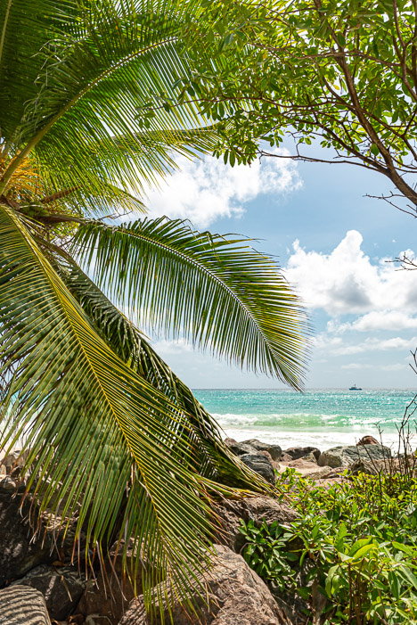
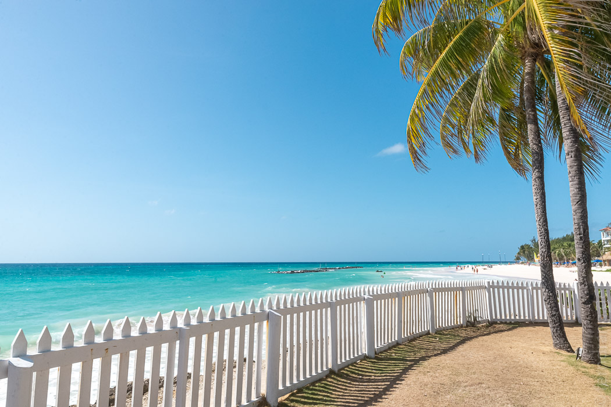
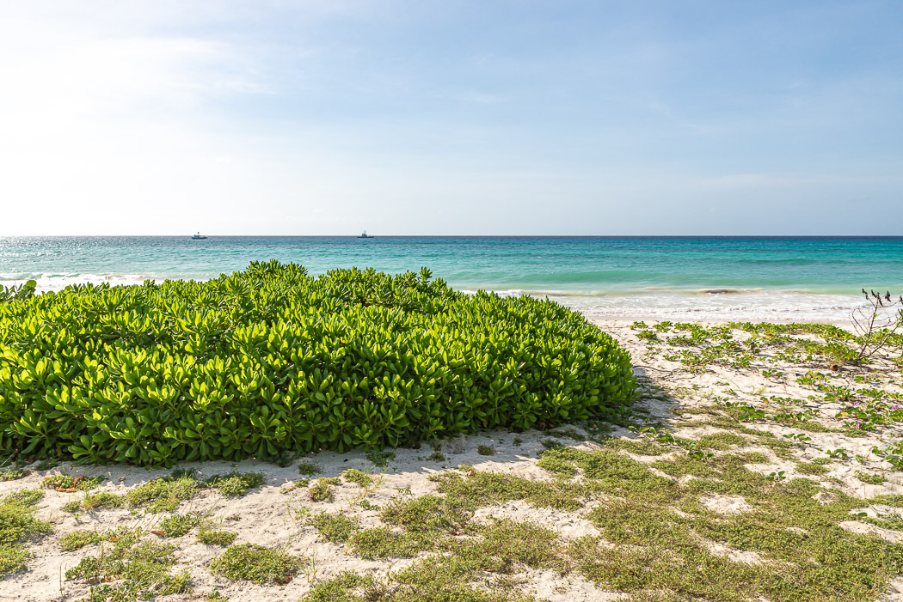
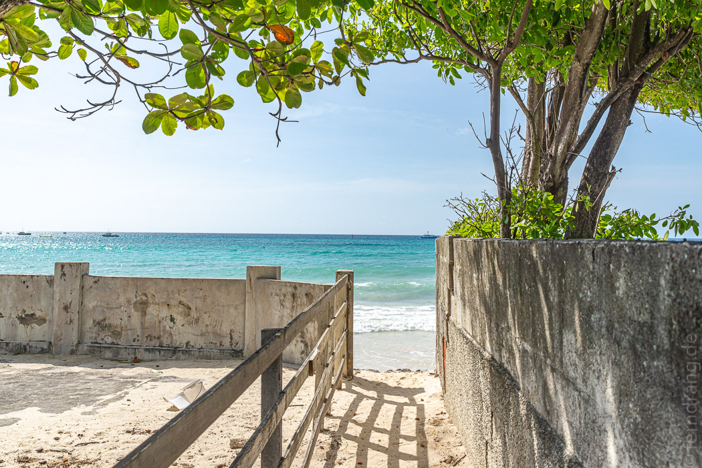
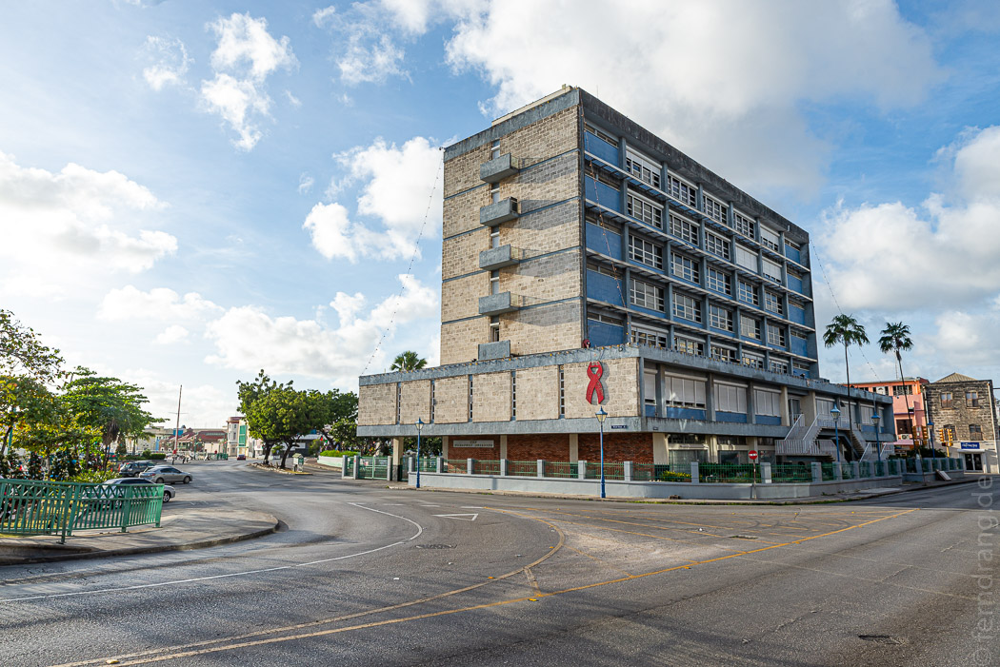
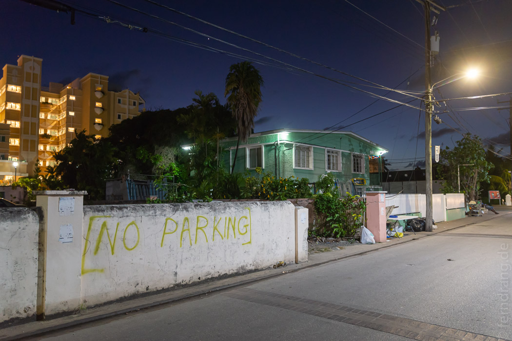
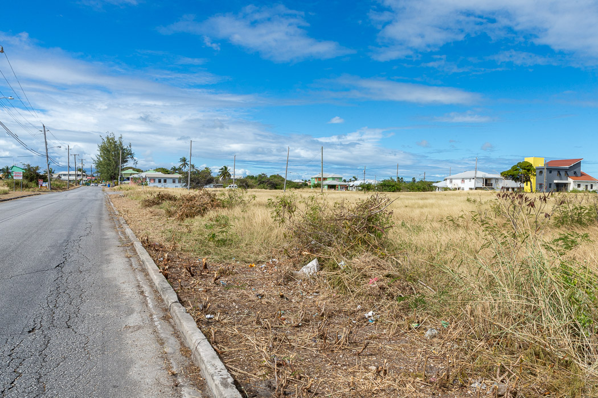

24/12/2019
Maxwell & Welches, Barbados
Barbados ist berühmt für seine weißen Strände und das türkisene Meer. Das konnten wir beim Anflug schon bewundern. Wir sind in einem AirBnB Apartment untergekommen, das in der Nähe vom Maxwell Beach lag. Die Gegend ist (wie fast alles außerhalb der großen Hotelanlagen) ziemlich tot. Der Zugang zum Meer ist an den meisten Stellen durch Privatgrundstücke versperrt. Obwohl wir keine 50m Luftlinie vom Strand wohnten, mussten wir eine Viertelstunde zum Strand laufen. Wenn man nicht gerade einen Abschnitt mit einem der großen Hotels erwischt, wo Liege und Sonnenschirm in den verrückten Zimmerpreisen enthalten sind, ist es geradezu einsam am Strand. Auf der Südseite von Barbabados gelegen, findet man kaum eine schattenspendenden Palme. Das Meer war aber herrlich erfrischend.
 Ein 20 minütiger Fußmarsch entlang der Uferstraße nach Osten führt zum Welches Beach. Dort gibt es keine Hotels sondern nur Ferienwohnungen. Der Strand liegt zwar direkt an der Straße, aber er ist herrlich lang und menschenleer. Noch etwas weiter gelangt man nach Oistins, wo es einen großen Supermarkt und ein nettes Café gibt.
 Abends sind wir meistens Richtung Westen gelaufen. Am Ende des Maxwell Beach fangen die Ausläufer des St Lawrence Gaps an. An der langen Straße in zweiter Reihe scheinen sich alle Restaurants von ganz Barbados zusammengefunden haben. Auch wenn das Preisniveau nach Sterneküche klingt, sind die meisten Läden Fish-and-Chips-Buden. Am Ende des Gaps gibt es ein paar schönere Läden, wie einen tollen Inder. Allerdings hatten wir an Weihnachten ohne Reservierung fast nirgendwo eine Chance auf einen spontanen Tisch.
Es war nicht die schlaueste Idee, den Weihnachtsfeiertag für den Ausflug nach Bridgetown zu nutzen. Außer dem Bus, der uns hingefahren hat, war im Ort alles geschlossen. Mit klassischen Sehenswürdigkeiten nicht gerade gesegnet, konnte die Stadt so wirklich gar nichts bieten. Wir haben ein offenes Lokal am Hafen gefunden und dort einen sehr schlechten Kaffee getrunken bevor wir den nächsten Bus zurück genommen haben.
Neben den öffentlichen Bussen, gibt es eine Armada von Vans und Minibussen, die Hauptstraße entlangfahren. Winken, reinspringen und hoffen, dass die Richtung stimmt. So konnten wir uns gegen ein paar Barbados-Dollar einige ermattende Spaziergänge ersparen.
Auch wenn die Strände oft traumhaft aussehen, ist das Inland der Insel ziemlich unaufregend. Wenn man eine heruntergekommene amerikanische Vorstadt in die Karibik verlegt, dürfte das Ergebnis ähnlich sein. Mit dem Strand im Rücken, in der zweiten Reihe hinter den Hotels, sehen die meisten Gegenden eher so aus:
 